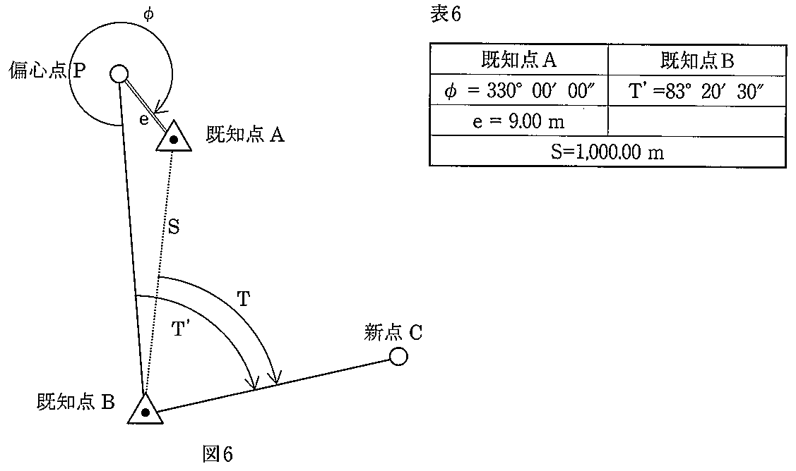
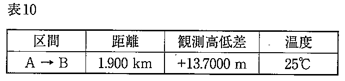
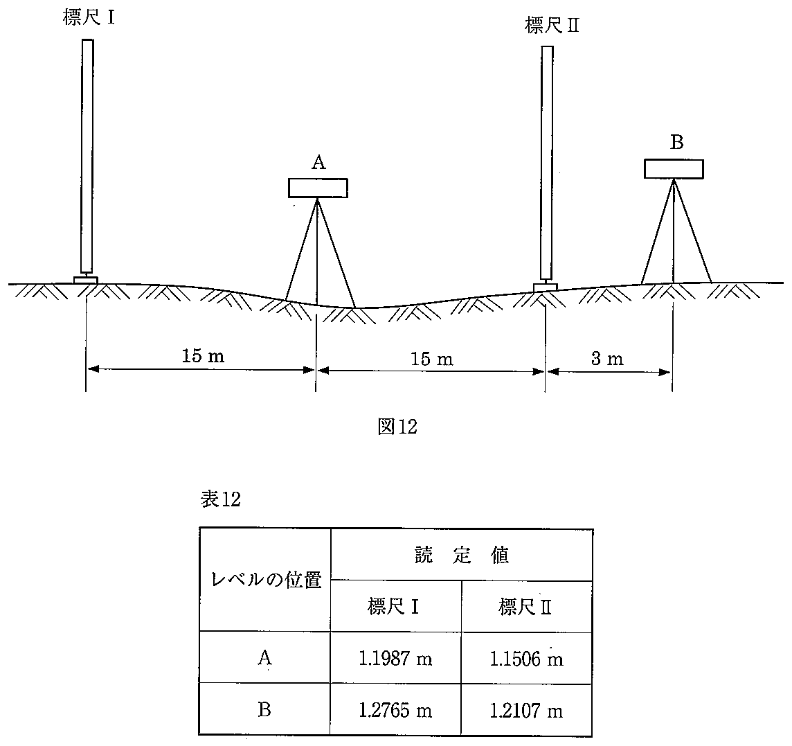
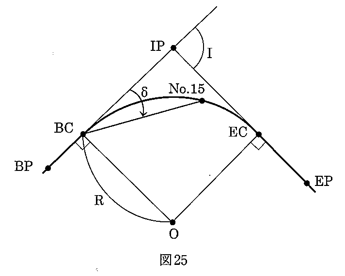
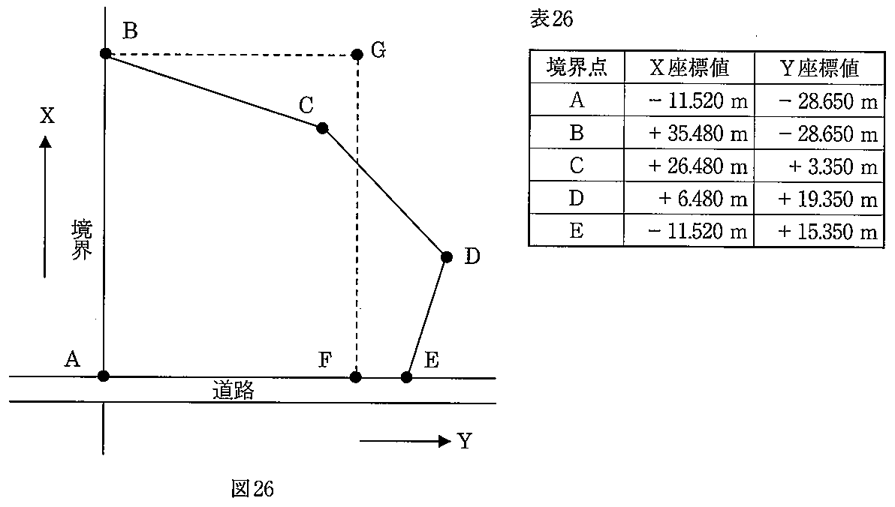

平成24年度（H24）計算問題
測量士補試験の計算問題 8 問。紙と鉛筆で解いてから「答えと解説」を開いてください。関数の値は試験の巻末の関数表を使います。
No.6多角
図6の既知点Bにおいて，既知点Aを基準に水平角を測定し新点Cの方向角を求めようとしたが，既知点Bから既知点Aへの視通が確保できなかったので，既知点Aに偏心点Pを設けて観測を行い，表6の結果を得た。既知点Aと新点Cの間の水平角Tの値は幾らか。最も近いものを次の中から選べ。
ただし，φ，e，T′，Sの値は表6のとおりとし，1ラジアンは，2″×10⁵とする。
なお，関数の数値が必要な場合は，巻末の関数表を使用すること。

- 82°50′15″
- 82°50′30″
- 83°05′15″
- 83°05′30″
- 83°20′15″
答えと解説
答え 4
B から A が見えないので、A の近くの P（偏心点）を見て角 T′ を測り、あとで A の向きとの差 x を直します（偏心補正）。角 φ は、P で B の向きから右回りに A の向きまで測った角で、330° もあります。P の内側の角は、ぐるっと 1 周の残りです。
A から、直線 PB までの長さは
B から 1,000 m 先で 4.5 m ずれて見えるので、角 x は（小さい角なので、長さ ÷ 距離 がそのままラジアン）
0.0045 × (2 × 10⁵)″ ＝ 900″ ＝ 15′
図では、A の向きのほうが P の向きより C に近いので、T は T′ より x だけ小さい角です。
No.7多角
平面直角座標系において，点Pは既知点Aから方向角が240°00′00″，平面距離が200.00 mの位置にある。既知点Aの座標値を，X＝＋500.00 m，Y＝＋100.00 mとする場合，点PのX座標及びY座標の値は幾らか。最も近いものを次の中から選べ。
なお，関数の数値が必要な場合は，巻末の関数表を使用すること。
- X＝＋326.79 m，Y＝－173.21 m
- X＝＋326.79 m，Y＝0.00 m
- X＝＋400.00 m，Y＝－173.21 m
- X＝＋400.00 m，Y＝－73.21 m
- X＝＋400.00 m，Y＝＋273.21 m
答えと解説
答え 4
方向角は、北（X）から右回りに測った角です。180°（真下＝南）よりさらに 60° 回った向き、つまり左下です。だから X も Y も減ります（−）。
X の変化 ＝ −200 × cos 60° ＝ −200 × 0.50000 ＝ −100.00 m
Y の変化 ＝ −200 × sin 60° ＝ −200 × 0.86603 ≒ −173.21 m
YP ＝ 100.00 − 173.21 ＝ −73.21 m
No.10水準
公共測量により，水準点Aから新点Bまでの間で1級水準測量を実施し，表10の観測値を得た。標尺補正を行った後の水準点A，新点B間の観測高低差は幾らか。最も近いものを次の中から選べ。
ただし，観測に使用した標尺の標尺改正数は，20℃において＋12 μm/m，膨張係数は，1.0×10⁻⁶/℃とする。

- ＋13.6998 m
- ＋13.6999 m
- ＋13.7000 m
- ＋13.7001 m
- ＋13.7002 m
答えと解説
答え 5
標尺（高さを読む物差し）の目盛りには、わずかな狂いがあります。標尺改正数は 1 m あたりの狂いを直す量（20 ℃ のとき）、膨張係数は温度 1 ℃ で 1 m あたりどれだけ伸びるかです。10⁻⁶ は 100 万分の 1 なので、1 m あたりでは 1.0 μm になります（1 μm ＝ 0.000001 m）。
1 m あたりの補正 ＝ 12 ＋ 1.0 × 5 ＝ ＋17 μm
高低差 13.7 m 分 ＝ 17 × 13.7 ＝ 232.9 μm ＝ 0.0002329 m ≒ 0.0002 m
補正後の高低差 ＝ 13.7000 ＋ 0.0002 ＝ ＋13.7002 m
標尺で読んだのは高さなので、掛けるのは高低差の 13.7 m。距離の 1.900 km は使いません。
No.12水準
レベルの視準線を点検するために，図12のようにA及びBの位置で観測を行い，表12に示す結果を得た。この結果からレベルの視準線を調整するとき，Bの位置において標尺Ⅰの読定値を幾らに調整すればよいか。最も近いものを次の中から選べ。

- 1.2570 m
- 1.2596 m
- 1.2604 m
- 1.2926 m
- 1.2960 m
答えと解説
答え 1
レベルの望遠鏡で見通す線（視準線）は水平でなければいけませんが、少し傾いていると、遠い標尺ほど読みが大きくずれます。A は 2 本の標尺のちょうど中央なので、傾いていても 2 本とも同じだけずれ、差は正しい値になります。B では標尺までの距離がちがうので、差にずれが出ます。
B での差 標尺Ⅰ − 標尺Ⅱ ＝ 1.2765 − 1.2107 ＝ 0.0658 m
ずれ ＝ 0.0658 − 0.0481 ＝ 0.0177 m
B では標尺Ⅰを大きく読みすぎています。この 0.0177 m は、B から標尺Ⅰ（33 m）と標尺Ⅱ（3 m）の距離の差 30 m で出たずれです。
ずれは距離に比例するので、33 m 先の標尺Ⅰの読みのずれは
標尺Ⅰを大きく読みすぎているので、その分を引きます。
No.14地形
トータルステーションを用いた縮尺1/1,000の地形図作成において，傾斜が一定な斜面上の点Aと点Bの標高を測定したところ，それぞれ72.8 m，68.6 mであった。また，点A，B間の水平距離は78 mであった。
このとき，点A，B間を結ぶ直線とこれを横断する標高70 mの等高線との交点は，地形図上で点Aから何cmの地点か。最も近いものを次の中から選べ。
- 1.3 cm
- 2.6 cm
- 3.9 cm
- 5.2 cm
- 6.5 cm
答えと解説
答え 4
A から B へ一定の傾きで下る斜面です。下がった高さと進んだ水平距離は比例するので、標高 70 m の等高線（同じ高さの所を結んだ線）と交わる所までの水平距離は、標高の差の比で出ます。
A から 70 m まで下がる高さ ＝ 72.8 − 70 ＝ 2.8 m
＝ 78 × 2/3 ＝ 52 m
縮尺 1/1,000 では、実際の 1 m が地図上の 1 mm なので、52 m は 52 mm ＝ 5.2 cm。
No.16写真
次の文は，デジタル航空カメラで鉛直方向に撮影された空中写真の撮影基線長を求める過程について述べたものである。［ア］～［エ］に入る数値の組合せとして最も適当なものはどれか。次の中から選べ。
画面距離12 cm，撮像面での素子寸法12 μm，画面の大きさ12,500画素×7,500画素のデジタル航空カメラを用いて撮影する。このとき，画面の大きさをcm単位で表すと［ア］cm×［イ］cmである。
デジタル航空カメラは，撮影コース数を少なくするため，画面短辺が航空機の進行方向に平行となるように設置されているので，撮影基線長方向の画面サイズは［イ］cmである。
撮影高度2,050 m，隣接空中写真間の重複度60%で標高50 mの平たんな土地の空中写真を撮影した場合，対地高度は［ウ］mであるから，撮影基線長は［エ］mと求められる。
- ア=9／イ=15／ウ=2,000／エ=1,000
- ア=9／イ=15／ウ=2,050／エ=1,025
- ア=15／イ=9／ウ=2,000／エ=600
- ア=15／イ=9／ウ=2,000／エ=615
- ア=15／イ=9／ウ=2,050／エ=615
答えと解説
答え 3
ア・イ 素子（光を受ける小さなマス）1 つが 12 μm なので、画素の数を掛けると画面の大きさです。1 μm は 0.001 mm なので、10,000 μm ＝ 1 cm です。
イ 7,500 × 12 μm ＝ 90,000 μm ＝ 9 cm
ウ 撮影高度 2,050 m は標高 0 m から、土地は標高 50 m にあるので、土地からカメラまでの高さ（対地高度）は
エ 撮影基線長は、1 枚目を撮ってから 2 枚目を撮るまでに飛行機が進む距離です。図の 2 つの三角形（レンズの上と下）は相似なので、写真 1 枚が進む向きに写す地面の幅は
となりの写真と 60% 重なるので、進むのは残りの 40% です。
No.25応用
図25に示すように，起点をBP，終点EPとし，始点BC，終点EC，曲線半径R＝200 m，交角I＝90°で，点Oを中心とする円曲線を含む新しい道路の建設のために，中心線測量を行い，中心杭を，起点BPをNo.0として，20 mごとに設置することになった。
このとき，BCにおける，交点IPからの中心杭No.15の偏角δは幾らか。最も近いものを次の中から選べ。
ただし，BP～BC，EC～EP間は直線で，IPの位置は，BPから270 m，EPから320 mとする。また，円周率π＝3.14とする。
なお，関数の数値が必要な場合は，巻末の関数表を使用すること。

- 19°
- 25°
- 33°
- 35°
- 57°
答えと解説
答え 3
中心杭は、BP から道のりで 20 m ごとに打つ杭です。No.15 は BP から 20 × 15 ＝ 300 m。まず、BC から No.15 まで、円の弧を何 m 進むかを出します。
BC から IP まで 円曲線の中心角は交角に等しく 90° で、中心 O と IP を結ぶ線がそれを半分の 45° に分けます。BC の角は 90° なので、直角三角形 BC・IP・O で
BP から BC まで ＝ 270 − 200 ＝ 70 m
BC から No.15 までの弧 ＝ 300 − 70 ＝ 230 m
弧の中心角 半径 200 m、長さ 230 m の弧の中心角は、弧 ÷ 半径（ラジアン）です。π ラジアンが 180° なので
1.15 × 180 ÷ 3.14 ＝ 207 ÷ 3.14 ≒ 65.9°
偏角 δ δ は、BC で IP の向きから No.15 の向きまで測った角です。三角形 O・BC・No.15 は 2 辺が半径の二等辺三角形なので、BC の角は (180° − 65.9°) ÷ 2 ≒ 57°。半径と IP の向きは直角だから
No.26応用
図26のように道路と隣接した土地に新たに境界を引き，土地ABCDEを同じ面積の長方形ABGFに整正したい。近傍の基準点に基づき，境界点A，B，C，D，Eを測定して平面直角座標系に基づく座標値を求めたところ，表26に示す結果を得た。境界点GのY座標値は幾らか。最も近いものを次の中から選べ。

- ＋6.052 m
- ＋7.052 m
- ＋8.052 m
- ＋9.052 m
- ＋10.052 m
答えと解説
答え 4
X は北（上）、Y は東（右）です。A と B は Y が同じなので AB は南北の線、A と E は X が同じなので AE は東西の線です。A を原点に移す（全部の X に 11.520、Y に 28.650 を足す）と、整数になって計算しやすくなります。
土地 ABCDE を、C と D を通る東西の線で 3 つに分けて面積を出します。
② 台形 ＝ (32 ＋ 48) × 20 ÷ 2 ＝ 800
③ 台形 ＝ (48 ＋ 44) × 18 ÷ 2 ＝ 828
土地 ABCDE ＝ 144 ＋ 800 ＋ 828 ＝ 1,772 m²
同じ面積の長方形 ABGF は、縦が AB の 47 m です。横 BG を出せば、G の Y 座標は B の Y 座標に BG を足した値です。
G の Y 座標 ＝ −28.650 ＋ 37.702 ＝ ＋9.052 m